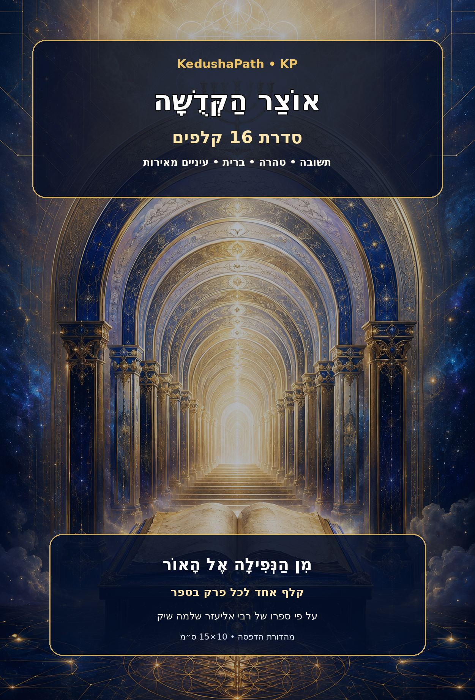

מסע מעשי ב־16 שערים
מן הדמעה אל
מאירת העיניים
מהדורת לימוד והדפסה מלאה: ספר המקור, סיכום פרשני, 128 ליקוטים, 64 פעולות וסדרת קלפים דו־צדדית שנועדה להפוך רעיון לעבודה יומית.
- 16
- שערים
- 128
- ליקוטים
- 64
- פעולות
- 38
- עמודי סיכום

KedushaPath · KP
🃏 שישה־עשר שערי העבודה
לחצו על קלף כדי לעבור בין החזית לגב. פתחו אותו למסך מלא לקריאה ולהורדה.
טוען את השערים…
מן הלימוד אל המעשה
🧭 ארבע שכבות בכל שער
- ארעיון מרכזי
תמצית הכיוון שהפרק מבקש לבנות בנפש.
- במשפט אור
שורה קצרה שנשארת בזיכרון ומחזירה אל הדרך.
- גארבע פעולות
צעדים קטנים שאפשר לבצע היום בלי להמתין לתנאים מושלמים.
- דשאלת דרך
שאלה אישית שמתרגמת את הלימוד לבחירה מעשית.
״הדמעה אינה סוף הדרך; היא יכולה להיות תחילתה של תפילה אמיתית.
ליקוט מעובד · שער 01